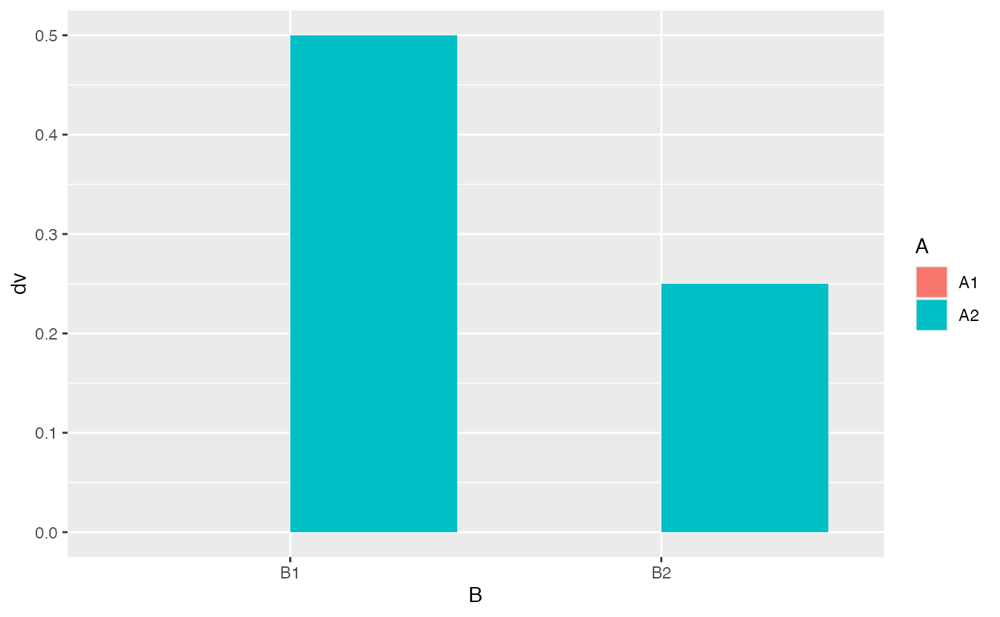
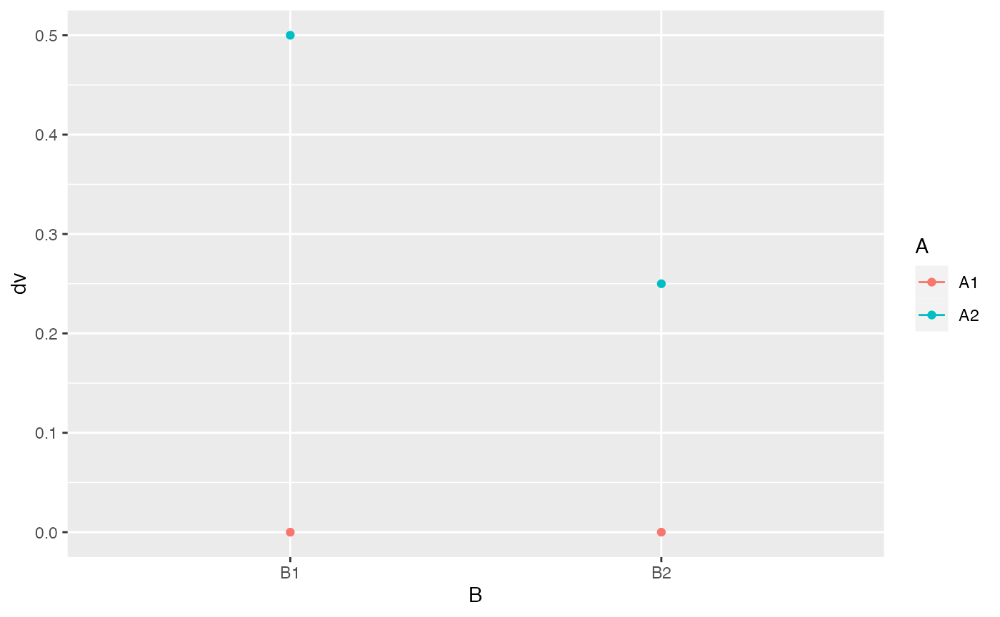

Lab8
Natalie Palmer
4/4/2022
Lab8.Rmd- Consider a 2x2 design. Assume the DV is measured from a normal distribution with mean 0, and standard deviation 1. Assume that the main effect of A causes a total shift of .5 standard deviations of the mean between the levels. Assume that level 1 of B is a control, where you expect to measure the standard effect of A. Assume that level 2 of B is an experimental factor intended to reduce the effect of A by .25 standard deviations. A. create a ggplot2 figure that depicts the expected results from this design
B. How many subjects are needed to detect the main effect of A with power = .8?
#load libraries
#load libraries
library(tibble)
library(ggplot2)
library(patchwork)
library(tidyverse)## ── Attaching packages ─────────────────────────────────────── tidyverse 1.3.1 ──## ✓ tidyr 1.1.3 ✓ dplyr 1.0.7
## ✓ readr 2.0.1 ✓ stringr 1.4.0
## ✓ purrr 0.3.4 ✓ forcats 0.5.1## ── Conflicts ────────────────────────────────────────── tidyverse_conflicts() ──
## x dplyr::filter() masks stats::filter()
## x dplyr::lag() masks stats::lag()
library(ggplot2)
df <- data.frame(A = c("A1", "A1", "A2","A2"),
B = c("B1", "B2", "B1", "B2"),
dv = c(0,0,0.5,0.25)
)
ggplot(df, aes(y=dv, x= B, fill = A)) +
geom_bar(stat = "identity", position = "dodge")
ggplot(df, aes(y=dv, x=B, color = A)) +
geom_point()+
geom_line()## geom_path: Each group consists of only one observation. Do you need to adjust
## the group aesthetic?
N <- 60
A_pvalue <- c()
B_pvalue <- c()
AB_pvalue <- c()
for(i in 1:1000){
IVA <- rep(rep(c("1","2"), each=2),N)
IVB <- rep(rep(c("1","2"), 2),N)
DV <- c(replicate(N,c(rnorm(1,0,1), # means A1B1
rnorm(1,0,1), # means A1B2
rnorm(1,.5,1), # means A2B1
rnorm(1,.25,1) # means A2B2
)))
sim_df <- data.frame(IVA,IVB,DV)
aov_results <- summary(aov(DV~IVA*IVB, sim_df))
A_pvalue[i]<-aov_results[[1]]$`Pr(>F)`[1]
B_pvalue[i]<-aov_results[[1]]$`Pr(>F)`[2]
AB_pvalue[i]<-aov_results[[1]]$`Pr(>F)`[3]
}
length(A_pvalue[A_pvalue<0.05])/1000## [1] 0.847
length(B_pvalue[B_pvalue<0.05])/1000## [1] 0.159
length(AB_pvalue[AB_pvalue<0.05])/1000## [1] 0.175C. How many subjects are needed to detect the interaction effect with power = .8?
N <- 525
A_pvalue <- c()
B_pvalue <- c()
AB_pvalue <- c()
for(i in 1:1000){
IVA <- rep(rep(c("1","2"), each=2),N)
IVB <- rep(rep(c("1","2"), 2),N)
DV <- c(replicate(N,c(rnorm(1,0,1), # means A1B1
rnorm(1,0,1), # means A1B2
rnorm(1,.5,1), # means A2B1
rnorm(1,.25,1) # means A2B2
)))
sim_df <- data.frame(IVA,IVB,DV)
aov_results <- summary(aov(DV~IVA*IVB, sim_df))
A_pvalue[i]<-aov_results[[1]]$`Pr(>F)`[1]
B_pvalue[i]<-aov_results[[1]]$`Pr(>F)`[2]
AB_pvalue[i]<-aov_results[[1]]$`Pr(>F)`[3]
}
length(A_pvalue[A_pvalue<0.05])/1000## [1] 1
length(B_pvalue[B_pvalue<0.05])/1000## [1] 0.804
length(AB_pvalue[AB_pvalue<0.05])/1000## [1] 0.821B1. Create a power curve showing how power for the interaction effect in this example is influenced by number of subjects. Choose a range of N from 25 to 800 (per cell) and run a simulation-based power analysis for increments of 25 subjects. Then plot the results using ggplot2 (2 points).